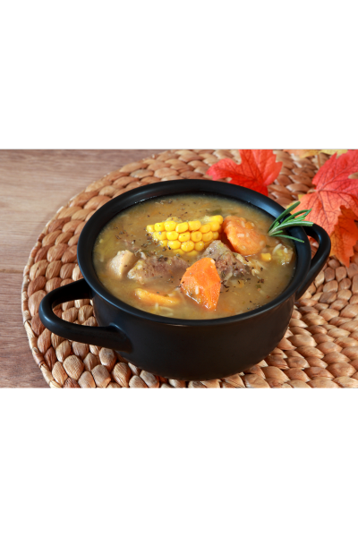

Sancocho

Description
Dominican Sancocho is a essential plate that is done when we have
a family reunion or meeting. That's a suop with chicken and other meat
with a intense flavor.
Ingredients
- ¼ cup dried oregano
- 5 cloves garlic, minced
- 2 teaspoons salt, divided
- 1 pound bone-in beef chuck
- 1 pound bone-in pork loin roast
- 5 chicken drumsticks, or more to taste
- 2 large lemons, juiced
- 2 large onions, quartered
- 2 tablespoons vegetable oil
- 1 tablespoon vinegar
- ½ cup vegetable oil
- 1 ¼ gallons water, or as needed
- 1 (14 ounce) can chicken broth
- 1 (10.5 ounce) can beef consomme
- 4 beef bouillon cubes, divided
- 1 ½ pounds Spanish pumpkin, peeled and cut into 1 1/2-inch chunks
- 1 pound sweet potatoes, peeled and cut into 1 1/2-inch chunks
- 1 pound eddeos, peeled and cut into 1 1/2-inch chunks
- ½ pound yuca (cassava) roots, peeled and cut into 1 1/2-inch chunks
- ½ pound potatoes, peeled and cut into 1 1/2-inch chunks
- 2 green plantains, peeled and cut into 1 1/2-inch chunks
- 2 ears corn on the cob, cut into quarters
- 3 stalks celery, diced
- 2 large carrots, chopped, or more to taste
- 1 large green bell pepper, diced
- 1 bunch cilantro, chopped
- 1 pinch adobo seasoning (Optional)
Steps
Step 1
-
Mash oregano, garlic, and 1 teaspoon salt in a bowl until well combined.
Step 2
-
Mix beef, pork, chicken, and lemon juice together in a large bowl; drain 1/2 of the liquid. Mix in onions, mashed garlic mixture, 2 tablespoons oil, and vinegar.
Step 3
-
Heat 1/2 cup vegetable oil in a large skillet over medium-high heat. Add meat mixture in three batches and cook until browned on all sides, 10 to 15 minutes per batch.
Step 4
-
Transfer browned meats to an 8-quart Dutch oven. Pour in 1/2 of the water, then add chicken broth, beef consommé, 2 bouillon cubes, and remaining 1 teaspoon salt. Bring to a boil, then reduce the heat to low, cover, and simmer until meats are more than halfway cooked through, about 40 minutes.
Step 5
-
Add pumpkin, sweet potatoes, eddeos, yuca, potatoes, plantains, corn, celery, carrots, bell pepper, cilantro, remaining bouillon cubes, and adobo seasoning to the Dutch oven. Increase the heat to medium and return to a boil. Reduce the heat to low and simmer, stirring in remaining water as needed in gradual increments to replace evaporated liquid, until root vegetables are soft and liquid has thickened, 1 to 2 hours.
Step 6
-
During the last 30 minutes of cooking, transfer beef, pork, and chicken to a cutting board. Let cool slightly, then remove bones and chop or shred meat. Return meat to the stew and finish cooking.